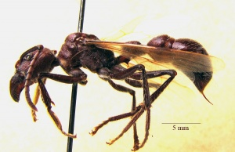

Paraponera clavata
Paraponera clavata, auch "24-Stunden-Ameise" genannt, ist eine der größten Ameisenarten der Welt. Sie ist die einzige rezente Vertreterin der Unterfamilie Paraponerinae. Neben ihr ist nur die fossile Art Paraponera dieteri bekannt. Der Stich dieser Art gilt als der schmerzhafteste Insektenstich der Welt. Durch die Dauer der Schmerzen nach einem solchen Stich kam diese Art zu ihrem Trivialnamen. Paraponera clavata kommt in einem großen Verbreitungsgebiet zwischen und einschließlich Süd-, und Mittelamerika vor.
Merkmale
Die Arbeiterinnen erreichen eine Körperlänge von 1,8 bis 2,5 cm, und haben einen schwarzen, manchmal auch leicht bräunlichen Thorax. Die Königinnen werden 2,5 bis 3 cm groß. Die Grundglieder der Tarsen der Vorderbeine von Arbeiterinnen sowie Königinnen sind auffallend goldfarben behaart, der Körper und die Beine sind beborstet. Paraponera clavata wird häufig mit Arten der Gattung Dinoponera verwechselt. Merkmale der Art sowie mit dieser gelegentlich verwechselte Arten sind in Bildern hier dargestellt: [1]
Verbreitung und Lebensraum
Paraponera clavata kommt entlang der atlantischen Küste von Süd- und Zentralamerika, einschließlich Costa Rica, sowie im gesamten Amazonasbecken bis zu den Anden vor. Sie siedelt bis zu 500 m ü. NN., vorwiegend in Erdnestern bevorzugt in der Nähe eines Baumstrunkes. Im Amazonasdelta ist sie häufiger anzutreffen.
Nahrung
Ihre Nahrung besteht zu 80 bis 90 Prozent aus Kohlenhydraten, die vornehmlich in Form von Pflanzenteilen oder Nektar aufgenommen werden. Zusätzlich wird auch Insektenbeute eingetragen, wenn auch nur in geringem Ausmaß. Es ist für derart große und wehrhafte Ameisen überraschend, dass sie tatsächlich sehr viel "Saft" (sap) ins Nest bringen; 77% der furagierenden Arbeiterinnen tragen bei der Rückkehr zum Nest Tropfen (wohl von extrafloralem Nektar?) zwischen den geöffneten Mandibeln. Zum teil beim Beuteeintrieb von Insekten wurden Nagetiere sowie mittelgroße Saugetiere zb. Katzen und Dachse erlegt beim vorbeistreifen.
Lebensweise

Paraponera clavata ist nicht aggressiv, außer wenn sie ihr Territorium verteidigt. Die Art gilt als sehr gelehrig und kann sich gut in ihrer Umgebung zurechtfinden und sich diese sehr schnell einprägen. Die Kolonien haben nur einige tausend Individuen und sind im Vergleich zu anderen Ameisenarten eher klein (die Größen einiger ausgezählter Kolonien werden von Keller 1993 mit 708, 1329 bzw. 2326 Individuen angegeben). Die Nester werden mit Vorliebe im Basisbereich größerer Bäume angelegt, in Ausnahmefällen werden Astregionen besiedelt. Bei Erregung kann Paraponera clavata dank eines speziellen Organs an der Gaster laut stridulieren.
Ihr Stachel verabreicht ein starkes Gift, mit dem sie Beutetiere lähmt oder Angreifer abweist. Beim Menschen verursacht der Stich heftigste Schmerzen. Der Stich wird als der schmerzhafteste Insektenstich überhaupt bezeichnet (nach Schmidt-Stichschmerz-Index). Die Schmerzen werden oft beschrieben, als würde man bei lebendigen Leib verbrennen. Sie lassen nach etwa 24 Stunden nach - daher der deutsche Name der Art. Eine sofortige Behandlung des Stiches mit Eiswasser und nachfolgender Einnahme von Benadryl-Kapseln (Antihistamin) mildert die Schmerzen. Das Gift, Poneratoxin (ein neurotoxisches Pentacosapeptid, also ein Nervengift) hinterlässt keine bleibenden Schäden im Gewebe. Weitere Informationen zur Giftwirkung finden sich unter Ameisenstiche.
Bericht zur Morphologie der Arbeiterinnen
Im Freiland ist es recht schwer scharfe Bilder von der agilen Art Paraponera clavata zu bekommen, trotz ihrer Größe.
Hier sind einige Bilder einer Exkursion gezeigt, die in Peru, Tambo Eori am Alto Rio Madre de Dios, auf 470 m Höhe, am 13.10.2007 stattfand. Die vielen Haare und die runzlige Oberfläche erzeugen zahlreiche Reflexe, die es zusammen mit den raschen Bewegungen der Tiere erschweren, wirklich scharfe Bilder der Ameisen zu ermöglichen.
Nach der Entdeckung eines Nestes unter dem Wurzelstock eines Baumes, kamen zahlreiche Ameisen heraus, als einer der Guides mit der Machete heftig an den Baum schlug.
Eine Arbeiterin auf einem Baumstamm in stärkerer Vergrößerung. Trotz teilweiser Unschärfe ist der „gelbe“ Vorderfuß zu erkennen. In Wahrheit handelt es sich dabei um eine dichte, gelb- bis rostrote Haarbürste (s. u.).
Ein Merkmal von P. clavata ist die zweigeteilte Fühlergrube mit einem dorsal (v) und einem ventral (h) vom Auge liegenden Teil. Beide Schenkel treffen sich in einem Winkel hinter dem Auge (im Bild oben). Zu erkennen ist auch das große, stark gewölbte Komplexauge sowie einer der beiden charakteristischen Höcker („Dornen“) auf dem Pronotum.
Im Internet sind kaum Angaben über das Aussehen bzw. die Einzelheiten der Morphologie von Paraponera clavata zu finden. Die Beschreibungen enthalten keine, oder aber häufig falsche zeichnerische Darstellungen.
Unter dem Binokular fallen einige Besonderheiten im Bau der Tiere auf, die mit den nachfolgenden Bildern erläutert werden sollen. Leider gibt es zwar einige Veröffentlichungen über Verhalten, Ernährung, Rekrutierung usw., aber mitunter lässt sich nichts über die anatomischen Gegebenheiten, etwa den Bau des Verdauungstraktes oder der Geschlechtsorgane finden.
Angesichts der ungewöhnlichen Morphologie der Tiere sollte eine Untersuchung der inneren Organe lohnend sein: Paraponera clavata, die einzige rezente Art ihrer Unterfamilie, scheint mindestens so ungewöhnlich, ja archaisch, wie die berühmte „Dinosaurier-Ameise“ Nothomyrmecia macrops aus Australien.
Seitenansicht von Kopf, Thorax und Petiolus. K = Kopf; P = Pronotum; Ms = Mesonotum; Mt = Metanotum; E = Epinotum.
Seitenansicht des Thorax (der Kopf wäre links). P = Pronotum; Ms, Mt = Meso- und Metanotum; E = Epinotum (die beiden schrägen Striche kennzeichnen seine vordere und hintere Begrenzung); H = Coxa des Hinterbeins, das ja unten am Metanotum ansitzt.
Der auffallend geformte Petiolus von P. clavata. Links = vorn. Der helle Punkt vor St ist das Stigma des Petiolus. Ventral (vD) sitzt ein nach unten gerichtetes Dörnchen.
Besonders auffällig sind die langen "Borsten" auf den Körpern der Art, die hier in anbetracht ihrer Größe tatsächlich die Bezeichnung Borsten verdienen. Sie sind am ganzen Körper zu finden, am Kopf und dem Thorax gibt es die dichtesten Anhäufungen.
Vorderbein von P. clavata mit goldgelb bis bräunlich gefärbter Putzbürste unter dem basalen Tarsusglied. An dessen Basis (rechts) ist eine Einsenkung, eine Putzscharte, zu erkennen, der ein Putzkamm am Ende der Tibia (Unterschenkel) gegenübersteht. Dieser Putzapparat, der auch bei anderen Ameisen vorkommt, dient v.a. der Reinigung der Antennen, die häufig durch die Putzscharte gezogen werden.
Kopf frontal mit geöffneten Mandibeln. Die mächtigen Kiefer sind nur wenig bezahnt, ein Hinweis auf die eher weniger räuberische Lebensweise von P. clavata. Darunter (braun) sind die übrigen Mundwerkzeuge, also Maxillen und Labium (Unterlippe).
![Rechts von dem S ist eine schräg von links oben nach rechts unten weisende Spalte mit wulstigen Rändern zu sehen: Das Stigma des Epinotums. Bei anderen Ameisen erscheint es zumeist rund oder schwach oval. Rechts von MtD leuchten einige Flecken mit helleren Farbtönen: Das sind die Hohlräume (Reservoire) der Metathorakaldrüse, die stets das Hinterende des Metathorax markiert. Unter „MtD“ ist die Coxa des linken Mittelbeines zu sehen. Das linke Hinterbein, das unterhalb der Metathorakaldrüse ansetzen würde, wurde komplett entfernt (einschließlich der Coxa) um den Blick auf den Ansatz des Petiolus freizugeben (der im Bild allerdings nicht scharf ist).](../images/thumb/f/f4/123-Pclav-EpinStigma-t.jpg/192px-123-Pclav-EpinStigma-t.jpg)
Rechts von dem S ist eine schräg von links oben nach rechts unten weisende Spalte mit wulstigen Rändern zu sehen: Das Stigma des Epinotums. Bei anderen Ameisen erscheint es zumeist rund oder schwach oval. Rechts von MtD leuchten einige Flecken mit helleren Farbtönen: Das sind die Hohlräume (Reservoire) der Metathorakaldrüse, die stets das Hinterende des Metathorax markiert. Unter „MtD“ ist die Coxa des linken Mittelbeines zu sehen. Das linke Hinterbein, das unterhalb der Metathorakaldrüse ansetzen würde, wurde komplett entfernt (einschließlich der Coxa) um den Blick auf den Ansatz des Petiolus freizugeben (der im Bild allerdings nicht scharf ist).
![Rechts von dem S ist eine schräg von links oben nach rechts unten weisende Spalte mit wulstigen Rändern zu sehen: Das Stigma des Epinotums. Bei anderen Ameisen erscheint es zumeist rund oder schwach oval. Rechts von MtD leuchten einige Flecken mit helleren Farbtönen: Das sind die Hohlräume (Reservoire) der Metathorakaldrüse, die stets das Hinterende des Metathorax markiert. Unter „MtD“ ist die Coxa des linken Mittelbeines zu sehen. Das linke Hinterbein, das unterhalb der Metathorakaldrüse ansetzen würde, wurde komplett entfernt (einschließlich der Coxa) um den Blick auf den Ansatz des Petiolus freizugeben (der im Bild allerdings nicht scharf ist).](./Datei:123-Pclav-EpinStigma-t.jpg.html)
{kind=link}
{kind=link}
{kind=link}
{kind=link}
{kind=link}
{kind=link}
{kind=link}
{kind=link}
{kind=link}
{kind=link}
Literatur
- Hermann, H.R. (1975): Crepuscular and nocturnal activities of Paraponera clavata (Hymenoptera: Formicidae: Ponerinae). Entomological News 86, 95-98. (Eine recht ausführliche Untersuchung des nächtlichen Furagier-Verhaltens von Paraponera clavata)
Weblinks
Die wohl besten Bilder von Paraponera clavata finden sich hier:
- [1]
- Zur Haltung von P. clavata Ein weiterer Haltungsbericht
- Foto einer Königin
- Foto einer Arbeiterin
- Foto eines Kampfes mit einer fremden Art
- Foto einer Arbeiterin
- Artikel zur Lebensweise von P. clavata: "Insectarium, Cincinnati Zoo and Botanical Garden" (en)
{kind=link}
{kind=link}
{kind=link}
{kind=link}